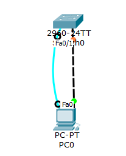

实训任务1：登录与管理交换机

1．按下面地址对PC0设置。
IP地址：192.168.1.2
子网掩码：255.255.255.0
2．配置交换机主机名(switchA) 、加密使能密码（S1）、虚拟终端口令（S2）。
交换机：
Switch> enable
Switch# conf t
Switch(config)# hostname switchA
switchA(config)# enable secret S1
switchA(config)# line vty 0 4
switchA(config-line)# password S2
3．配置交换机管理IP地址（192.168.1.1）、子网掩码（255.255.255.0）。
交换机：
SwitchA(config)# interface vlan 1
SwitchA(config-if)# ip address 192.168.1.1 255.255.255.0
4．查看VLAN 1虚接口的状态信息；并测试与PC0的连通性。
交换机：
SwitchA# show interface vlan 1
PCO：
PC> Ping 192.168.1.1
注：此时PC0不可以 ping通SwitchA
5．启用VLAN 1虚接口；再查看VLAN 1虚接口的状态信息，并测试与PC0的连通性。
交换机：
SwitchA(config-if)# no shutdown
SwitchA# show interface vlan 1
PC0：
PC> Ping 192.168.1.1
注：此时PC0可以 ping通SwitchA
6．通过Telnet方式登录到交换机并且保存配置文件。
PCO：
PC> telnet 192.168.1.1
password: S2
Switch> enable
password: S1
SwitchA# write
7．配置交换机端口f0/1，端口速度（100Mbit/s）、端口双工方式（半双工）。
交换机：
SwitchA(config)# interface f 0/1
SwitchA(config-if)# speed 100
SwitchA(config-if)# duplex half
8．查看交换机版本信息。
交换机：
SwitchA# show version
9．查看当前生效的配置信息。
交换机：
SwitchA# show running-config
SwitchA# show startup-config
10．查看交换机的MAC地址表的内容。
交换机：
SwitchA# Show mac-address-table